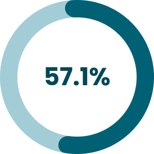
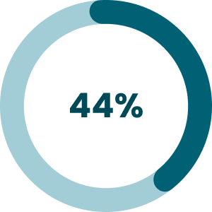
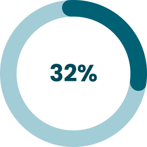
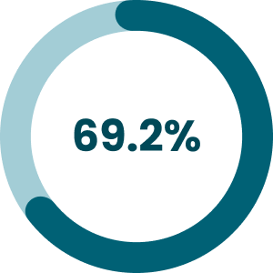
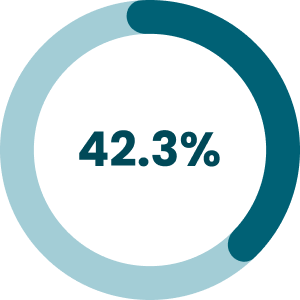
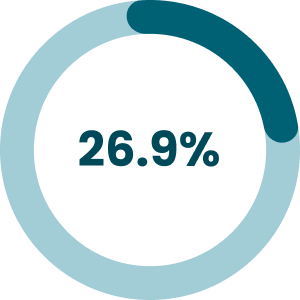

Part I: Overview
Design Roles
- Researcher
- UX/UI Designer
- Visual Designer
Deliverables
- User Survey
- Competitive Analysis
- Personas
- User Stories
- User Flows
- Sketches
- Wireframes
- Usability Tests
- Preference Test
- Branding
- High Fidelity Mockups
- Prototype
Tools
- Figma
- Draw.io
Summary
A11y Learning is aimed to help students of design and web development to learn about accessibility so they can create accessible products for everyone.
A11y learning provides quick quizzes and links about accessibility, and an option to create notes about what you have learned.
The outcome of this project highlights the importance of creating web pages and apps that everyone can use.
Problem
Unfortunately, there are still many designers and developers that do not apply accessibility guidelines to their projects for many reasons, such as the many rules they have to learn or a lack of time to study the subject.
On the other hand, everyone has to have the same right to use websites or applications. Something needs to be done to create knowledge and conscious awareness so we can make disabled people’s lives easier when using websites or applications.
Solution
After the research process, I got a clear picture of the target market and understood some student’s reasons for not applying the accessibility guidelines in their projects. From this, A11y Learning was born to help students to learn accessibility consistently using just 10 to 30 minutes per day.


Part II: Research and Discovery
User Survey
I conducted a User Survey, where I obtained 33 responses, to understand the student’s reasons for not applying accessibility guidelines to the design and development of their projects, and whether an application to help them learn accessibility would be successful in the current market.
From this survey, I discovered that 100% of the respondents are in some way familiar and interested in web accessibility, but 21.2% do not apply any accessibility rules to their projects.

are familiar and interested in web accessibility

do not apply any accessibility rules
In a question that accepted more than one answer, I asked why they do not apply the guidelines.

do not have the knowledge

intent to apply it after graduation

do not have time to study the subject

do not have time to apply it
In a question with more than one answer, 68.8% of those that said they apply the accessibility guidelines to their projects cited the following problems.

do not have the knowledge of the rules

do not have time to study the subject

do not have time to apply it
the school does not require accessibility
I also asked those respondents that apply the guidelines, again in a question that accepted more than one answer, their biggest frustration about accessibility guidelines.

it is hard to learn all the rules

there are so many rules

do not know what resources would be helpful for learning

it is time-consuming to apply it
I also asked those respondents how much time per week they spent last semester trying to learn about accessibility, and 30.8% said between 0 and 1 hour per week, 38.5% said between 1 and 2 hours per week, 7.7% said between 2 and 3 hours per week, 15.4% said 3 to 4 hours or more per week, and 7.7% said that they did not spend any time per week.

0-1 hour (30.8%)
1-2 hours (38.5%)
2-3 hours (7.7%)
3-4 hours (15.4%)
None (7.6%)
Besides, I asked how much time would be reasonable for the respondents to study web accessibility every day, and 45.4% said 15 minutes, 36.3% said 30 minutes, and 12.1% said 1 hour.

15 min (45.5%)
30 min (36.3%)
1 hour (12.1%)
None (6.2%)
Another important takeaway

of the respondents would like to work for a company that cares about accessibility
What I learned from this survey is that students who apply or do not apply the accessibility guidelines have the same problems: lack of knowledge, lack of time to study the subject, and lack of time to apply the rules. It is worth noting that 87.9% of survey participants want to work for a company that cares about accessibility, so it is essential to alleviate these problems.